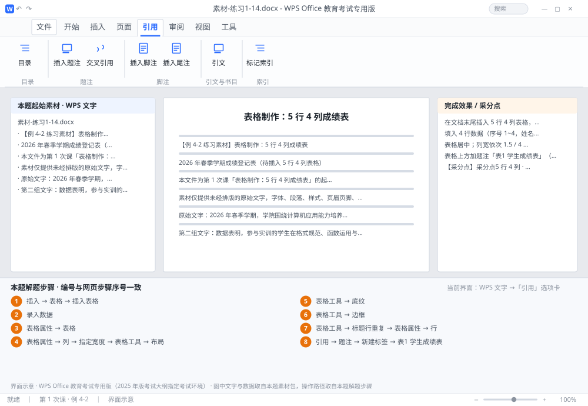

完成比对文档 · 例 4-2
表格制作：5 行 4 列成绩表 ｜ 第 1 次课 / WPS 文字 ｜ 网页：入门实操课.html ｜ 考试环境：WPS Office 教育考试专用版（2025 年版考试大纲指定考试环境）
用途 本页按修订后的题目要求与解题步骤生成，是交卷自查的结果基准：
逐项列出每一步应出现的可复核结果，配合模拟操作截图与解题结果文件使用。
它不是素材包的一部分，不会预置答案动作；起始素材仍从本题素材包下载。
一、本题起始素材包
目录：练习素材/练习1-14-表格制作/ ｜
下载包：练习素材/下载/练习1-14-表格制作.zip
二、题目要求
- 在文档末尾插入 5 行 4 列表格，表头为「序号 / 姓名 / 平时成绩 / 总评」。
- 填入 4 行数据（序号 1~4，姓名自拟，成绩 60~100 之间的整数）。
- 表格居中；列宽依次 1.5 / 4 / 3 / 3 厘米；表头行浅灰底纹、加粗、居中；全表加所有框线。
- 表格上方加题注「表1 学生成绩表」（宋体五号、居中）。
- 另存为 学号-姓名-练习4-2.docx。
三、解题步骤（编号与下方核对表、截图编号一致）
- 插入表格。光标定位到文末 →「插入」→「表格」→「插入表格」→ 列数 4、行数 5 → 确定。
- 录入数据。逐格输入，按 Tab 跳到下一格；在最后一格按 Tab 会自动新增一行（本题不需要，注意别多按）。
- 表格居中。点表格左上角的十字箭头选中整个表格 → 右键 →「表格属性」→「表格」选项卡 → 对齐方式选 居中 → 确定。（选中整表后按 Ctrl+E 也能让表格整体居中；注意别把"表格工具 → 对齐方式"里的九宫格当成表格居中，那是设置单元格内文字的对齐。）
- 设列宽。选中表格 →「表格属性」→「列」→ 勾选「指定宽度」，逐列设 1.5 / 4 / 3 / 3 厘米；也可选中某一列后在「表格工具 → 布局」里输宽度。（先设「自动调整 → 固定列宽」，否则列宽会被内容顶变。）
- 表头格式。选中第 1 行 →「表格工具」→「底纹」选浅灰（如 15% 灰度）→ Ctrl+B 加粗 → 对齐选居中。
- 加所有框线。选中整个表 →「表格工具」→「边框」→ 选 所有框线。（若表格原本无框线，这一步才看得见格子。）
- 跨页标题重复。选中第 1 行 →「表格工具」→ 点 「标题行重复」；或用「表格属性」→「行」→ 勾选「在各页顶端以标题行形式重复出现」。
- 加题注。光标放在表格上方一段 →「引用」→「题注」→「新建标签」输入 表 → 位置选 所选项目上方 → 确定；把题注文字改为「表1 学生成绩表」，设宋体五号、居中。最后另存为 学号-姓名-练习4-2.docx。
四、完成效果 / 采分点
采分点5 行 4 列 · 表头文字与底纹、加粗、居中 · 四列宽度数值 · 所有框线 · 题注在上方且字体字号正确
五、逐项完成核对表
| 步骤 | 关键操作路径 | 应出现的结果（可复核） |
|---|
| 1 | 插入表格 | 「插入」、「表格」、「插入表格」 |
| 2 | 录入数据 | 录入数据 |
| 3 | 表格居中 | 「表格属性」、「表格」 |
| 4 | 设列宽 | 「表格属性」、「列」、「指定宽度」、3 厘米、「表格工具 → 布局」 |
| 5 | 表头格式 | 1 行、「表格工具」、「底纹」、15% |
| 6 | 加所有框线 | 「表格工具」、「边框」 |
| 7 | 跨页标题重复 | 1 行、「表格工具」、「标题行重复」、「表格属性」、「行」 |
| 8 | 加题注 | 「引用」、「题注」、「新建标签」、「表1 学生成绩表」、学号-姓名-练习4-2.docx |
六、模拟操作截图

界面示意 · WPS Office 教育考试专用版 · 橙色编号与本题解题步骤序号一致；
图中文字与数据取自本题素材包，功能入口取自本题解题步骤。
核对方法：按网页解题步骤完成并另存自己的成稿后，逐行比对本表第 3 列的
参数、公式、区域、文件名与对象数量；再对照网页「完成效果 / 采分点」检查版式是否一致。